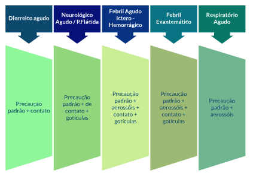

A Anvisa tem outros documentos produzidos, como, por exemplo, o Protocolo de Plano de Contingência - Uso de Equipamento de Proteção Individual – EPI e Isolamento n. 8, que detalha o esquema sindrômico para direcionamento das suspeitas de eventos, conforme mostra a imagem a seguir.
Figura 5. Definição de preocupação de acordo com os sinais e sintomas associados a cada síndrome
Fonte: elaborada pelo autor